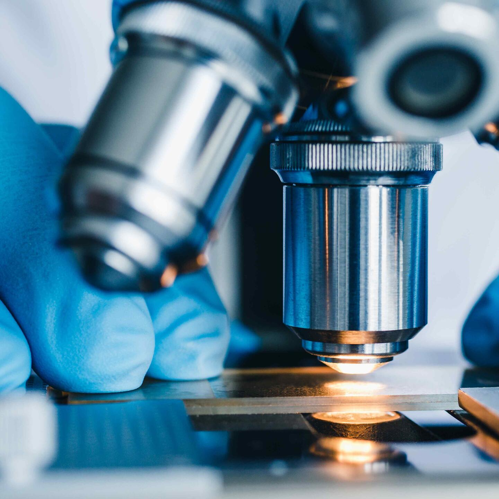

News Articles
WADA announces research projects funded through first cycle of 2024 Scientific Research Grant Program
Published on: October 23, 2024
The World Anti-Doping Agency (WADA) is pleased to publish the list of scientific research projects provisionally approved to receive a total of USD 1.4 million funding through the Agency’s Scientific Research Grant Program.
The 14 projects that have been selected for funding correspond to the first cycle of the 2024 Grant Program, for which the Agency received a total of 70 expressions of interest (EOI), of which 32 were invited to submit full applications. Read MoreWADA President addresses anti-doping leaders at 2024 Central and Eastern European Anti-Doping Summit
Published on: October 18, 2024

This week, members of the World Anti-Doping Agency’s (WADA) leadership team were in Belgrade, Serbia to participate in the 2nd edition of the Central and Eastern European Anti-Doping Summit.
The Summit is organized by the Central European Anti-Doping Organization (CEADO), a partnership of nine National Anti-Doping Organizations (NADOs) from Austria, Croatia, Czech Republic, Hungary, Poland, Romania, Serbia, Slovakia and Slovenia that work together towards the common goal of harmonizing and strengthening the anti-doping system in the region...........
Read MorePogba ready to return after Doping Ban Reduction
Published on: October 17, 2024

Oct 16 (Reuters) - Juventus midfielder Paul Pogba is eager to return to football after having his doping ban reduced from four years to 18 months and said he dreams of playing at the 2026 World Cup with France.
The Court of Arbitration for Sport cut the 31-year-old's ban earlier this month after he was provisionally suspended by Italy's National Anti-Doping Agency (NADO Italia) in September 2023 following a positive test for DHEA, a banned substance that boosts testosterone levels. Read More